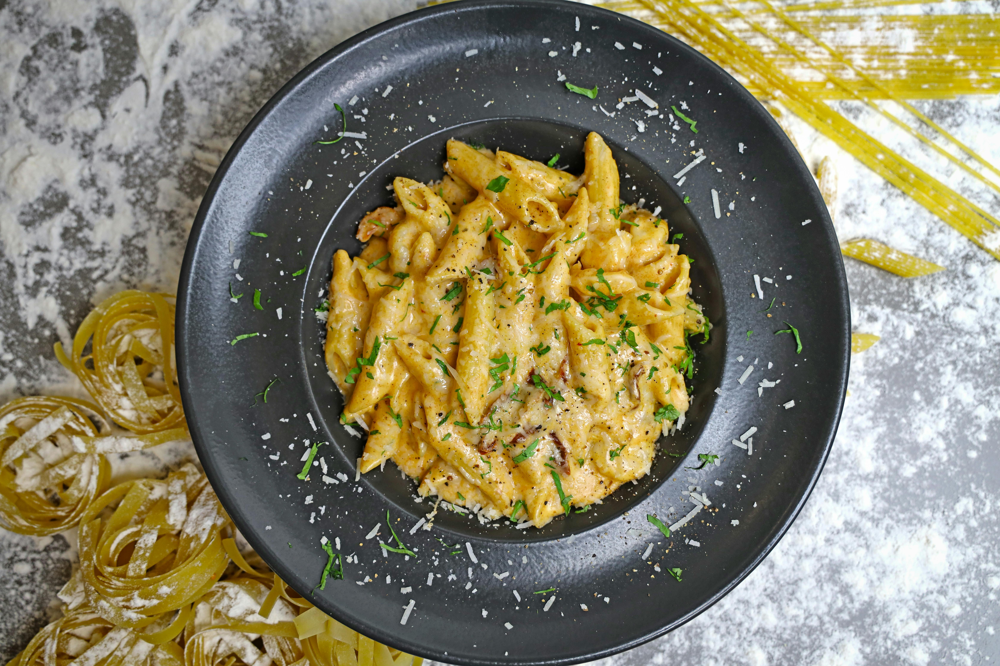

Pasta is a versatile and comforting dish made with soft, cooked noodles tossed in a flavorful sauce. It can be prepared in many styles, from creamy white sauce to tangy tomato-based versions, often combined with vegetables, chicken, or cheese for extra richness.
This dish is popular worldwide because it is quick to make and easy to customize. Whether served as a light meal or a hearty dinner, pasta offers a perfect balance of taste and texture, making it a favorite for both beginners and experienced cooks.
Cook pasta in salted water until soft, then drain and keep aside.
Heat oil or butter, add garlic (and onion), and sauté until fragrant.
Add tomato or pasta sauce, salt, pepper, and chili flakes. Cook for a few minutes.
Add boiled pasta, mix well, top with cheese if you like, and serve hot.